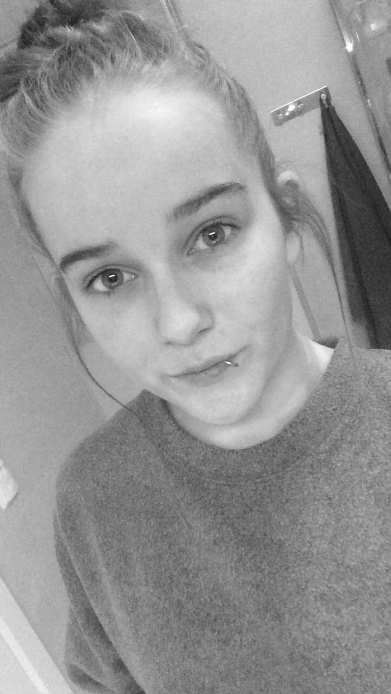

2006-2014 - Bygland skule
2014-2016 - Bygland skule
2016-2017 - Service og samferdsel - Dahlske Videregående skole
2017-2018 - Design og håndverk - Sam Eyde Videregående skole
2018-2019 - Barne- og ungdomsarbeiderfaget - Sam Eyde Videregående skole
2019-2020 - Påbygg til studiekompetanse - Arendal Videregående skole
Klisterhjerne
Liker å planlegge og legge deadlines for oppgaver. Men ha en åpen dialog.